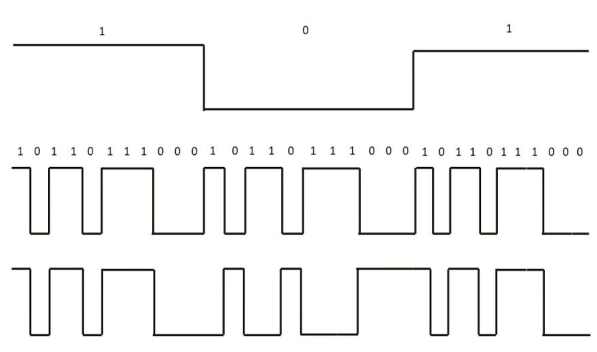
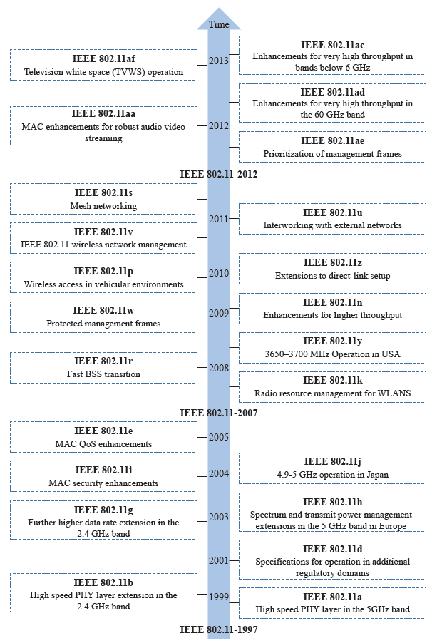

WiFi代际发展
从ALOHA到Enthernet，再到WiFi，网络的发展和万事万物一样都是循序渐进的——也许有些阶段发展很快。但总体而言，当前的发展都是基于历史基础的，没有什么东西是凭空出现的。
了解WiFi的第一代之前，还是需要介绍一下其背景。
FCC是美国联邦通信委员会，1985年，其为工业、科学和医学领域颁发了ISM牌照，开放了900MHz，2.4GHz，和5.8GHz三个频段，并且只允许节点采用扩频技术来通信。
WaveLAN是1987~1988年设计的第一个无线局域网产品，用于收银系统，这就是WiFi的前身。其研究者是后续WiFi标准制定的主要贡献者之一。
1990年时，IEEE 802.11委员会正式成立。
802.11下有不同的协议，分别是不同的项目组，从a至z进行编号。但编号顺序只是立项的顺序，而非发布的顺序，所以会出现先发布i，再发布e的情况。当编号用尽后，再从aa至az进行第二轮编号。所以ac与a并无什么继承上的关系，只是由aa、ab顺下来罢了。
1997年
802.11协议正式通过，即802.11-1997，包含跳频和直序扩频两种模式，支持1Mbps和2Mbps的速率。
1999年
IEEE颁布802.11b协议，其主要是在物理层增加了HR/DSSS（High-Rate Direct Sequence）模式。该模式引入了CCK编码，能够提供5Mbps和11Mbps速率。
HR/DSSS（High-Rate Direct Sequence）是改进的DSSS技术，其为802.11b的核心技术。而HR/DSSS的核心在于CCK。
同年，802.11a也由IEEE正式发布。802.11在物理层引入了新的技术OFDM，能更高效地利用频谱资源，提高传输速率，理论上最高可达54Mbps。但是FCC当时并未在2.4G频段上开放此技术（只允许扩频技术），802.11a使用的是5G频段。
但802.11a在当时并未成为主流选择。原因主要是成本太高。802.11a推广的时候802.11b已经普及，新出的设备如果要同时兼容802.11a/b其射频模块需要同时支持2.4G和5G，提高成本；此外802.11a的技术相对复杂，实现的成本也会比较高。
怎么理解DSSS、Barker Sequence、CKK？
原始数据需要扩频，而DSSS（Direct Sequence Spread Spectrum，直序序列扩频）和跳频是两种主流扩频方法，其中DSSS应用最广。
DSSS需要扩频序列来进行扩频，而Barker Sequence就是其中一种扩频序列，比如 1 扩频成 10110111000，0 则相反。
CKK（Complementary Code Keying，互补码键控）是经过改进后的扩频序列。该扩频码相比于巴克码先进点在于一组巴克码只能表示一比特的数据，而一组CCK码可以表示多个比特，这让传输速率大幅增加。
CCK码组并非随意定的，其需要满足抗干扰的特性，在某些码片被干扰后依旧可以识别出来原数据。
因此应用CKK的802.11b的传输速率从1Mbps和2Mbps，提升到了5.5Mbps和11Mbps。
DSSS原理如下图所示，上面是原数据信号，中间是扩频序列，下面是经过扩频序列处理的扩频后信号。这可以达到两个目的：
- 满足ISM频段的要求，将信号进行扩频（为何需要扩频，扩频为什么可以分摊功率？）
- 抗干扰性增强
先解释第一点
扩频是因为避免在某个窄带功率过大，扩频可以避免这个情况。至于为什么可以降低功率，我理解得不够透彻，以下姑且进行解释。因为信号发射器的功率是固定的，扩频后能量会分摊在各个频段上，从而减低功率密度。
再解释第二点
假设某个地方产生干扰，10110111000被干扰成了11010111000，第二第三位出现差错，但其它位置是正确的，所以接收方仍然会正确解释该数据。

2003年
802.11g发布。2002年，FCC在2.4G开放了OFDM技术，802.11a的技术得以迁移到2.4g频段，并于802.11b相结合，设计出运行在2.4G频段的802.11g协议。
该协议简单来说就是将前两个协议的优点相结合并兼容多种技术，后得到普及。
（同年，欧洲无线电监管机构提出在5G频段上增加455MHz的可用频段，该频段日后成为了802.11ac使用的重要信道资源。）
2004年
802.11i正式发布。该协议主要针对安全问题设计。
2005年
802.11e发布。该协议有着巨大的作用与影响，主要在MAC层进行了改良，也成为了后续各个WiFi版本的基础。
最大的改进之处在于引入了QoS，即服务质量。简单来说就是保证用户使用网络时的体验，具体而言是区分数据的优先级，比如实时数据就要比非实时数据优先级要高。在该协议中MAC接入机制为EDCA/HCCA。EDCA和HCCA可以简单理解为就是DCF和PCF在引入QoS、TXOP、Block ACK后的改良接入机制。
TXOP是Transmit Opportunity的缩写。在该机制出现之前，发送设备在抢到信道后发送一个包后就要放弃信道。而该机制使得获得信道后可以持续发送一段时间。
Block ACK为批量确认，以前的话是发一个包等待一个ACK，该机制可以批量确认ACK，提高传输效率。
这里简单介绍一下物理层和MAC层的区别。可以这样类比，物理层就是搭建的公路系统，而MAC层是交通规则。交通规则是有个不断进化的过程的，比如在十字路口，也许一开始是只要路上没车我就开上前去。后来设立了红绿灯，变得有条理了起来。再到后面通过大数据分析以及实时路况检测，能够智能调配红绿灯的时间以最大程度利用道路。MAC层也是这么进化的。
2009年
802.11n正式通过。该协议的核心技术是MIMO。MIMO是Multiple-input Multiple-output的缩写。简单来说，就是可以通过多条天线实现在空间上同一频段、同一时间的多条数据流的一对一的发送（目前还不能做到一对多），这提高了在空间上的利用率。
MIMO可以实现空间分集和空间复用。空间分集是不同天线传相同数据，提高可靠性；空间服用则是不同天线传不同数据，提高数据传输速率。
该协议同时支持2.4G和5G频段。
2014年
802.11ac正式通过。该协议将MIMO改进为MU-MIMO，但是只支持下行，也就是说只支持AP同时发送给多个用户数据，不支持AP同时接收多个用户的数据。上行 MU-MIMO 由后续 802.11ax（WiFi 6）实现。该协议速率最高可达3.5Gbps。
802.11ac分为wave 1和wave 2。wave 1在2012左右上市，并不健全，比如MIMO仍不支持多用户。。2014正式通过的是wave 2。因为打算分两波分批投入市场，所以命名为wave。wave 1仍然是普通的MIMO。
（待补充 … ）

（WiFi的全称是Wireless Fidelity，意为无线高保真网络。）
参考资料
https://zhuanlan.zhihu.com/p/21951093?next=https%3A%2F%2Fzhuanlan.zhihu.com